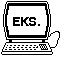

Visitor I, II & III
Visitor I, II & III er det komplette verktøy for en effektiv og
kostnadsbesparende besøkshåndtering under Microsoft Windows. Systemet
er utviklet i samarbeid med flere større norske bedrifter og
inneholder i tillegg funksjoner som fraværsmarkering,
beskjedformidling og møteromsreservasjon.
Visitor I, II & III består av tre uavhengige programmer som knyttes
opp mot en felles database i et PC-nettverk........
Visitor I - For selvregistrering........
- Tospråklig velkomstbilde med kundens logo i farger.
- Trinn for trinn instruksjon på valgte språk.
- Betjenes uten bruk av mus.
- Variert utvalg av tilbakemeldinger til de besøkende.
- Automatisk beskjedformidling på skjerm og/eller på etikett.
- Automatisk kontroll mot eventuell forhåndsregistrering.
- Automatisk kontroll mht. gyldig besøksmottaker og inne/ute status.
- Termisk utskrift av besøksetiketter med eller uten strekkode.
- Eget konfigurasjonsprogram for valg av farger, logo, etc.
- Kan leveres med folietastatur eller "touch screen".
- Eget møbel med innebygd PC og termisk skriver kan leveres.

Eksempel på skjermbilde
Visitor II - For resepsjonisten........
- Hurtig innregistrering inkl. termisk etikettutskrift.
- Innregistrering med data fra tidligere besøk.
- Automatisk kontroll mot eventuell forhåndsregistrering.
- Visning av besøksmottakerens tlf. nr. ved innregistrering.
- Automatisk innregistrering av forhåndsregistrerte grupper.
- Forhåndsregistrering med eller uten utskrift av etikett.
- Fraværsmarkering med automatisk kontroll ved innregistrering.
- Hurtig utregistrering ved hjelp av besøksnummer eller etternavn.
- Kan tilknyttes strekkode leser for inn- og utregistrering.
- Sentralbordstøtte med hurtigsøk på dagens besøkende.
- Enkel registrering og visning/utskrift av beskjeder til de besøkende.
- Eget register for møteromsreservasjoner.
- Funksjonstastene kan benyttes til de vanligste rutinene.
- Utskrift av forhåndsregistrerte (m/strekkode), rømmningsliste, etc.
Eksempel på skjermbilde
Visitor III For den systemansvarlige........
- Inneholder alle Visitor II funksjonene +
- Konfigurasjon av besøkskategorier, meldinger i Visitor I, etc.
- Fleksible sletterutiner.
- Menystyrt sikkerhetskopiering.
- Kan temporært lese besøksdata fra sikkerhetskopier.
- Muligheter for oppdatering av faktiske registreringer.
- Databaseverktøy.
- Utskrift av besøksjournaler, tidrapporter, statistikk, etc.
Eksempel på skjermbilde
![[Oslonett Home]](/graphics/home.gif)
![[Oslonett Markedsplassen]](/graphics/market.gif)